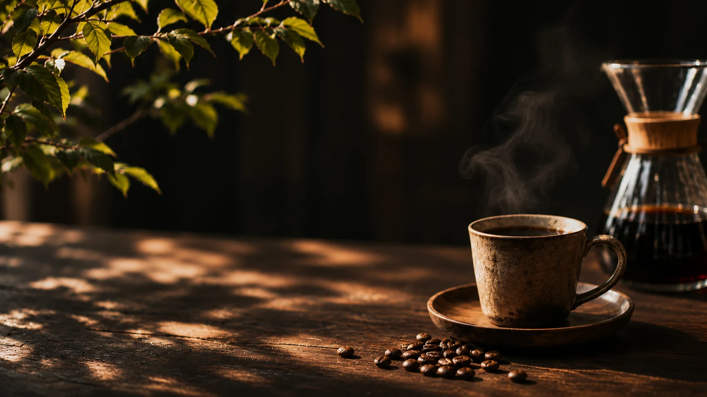
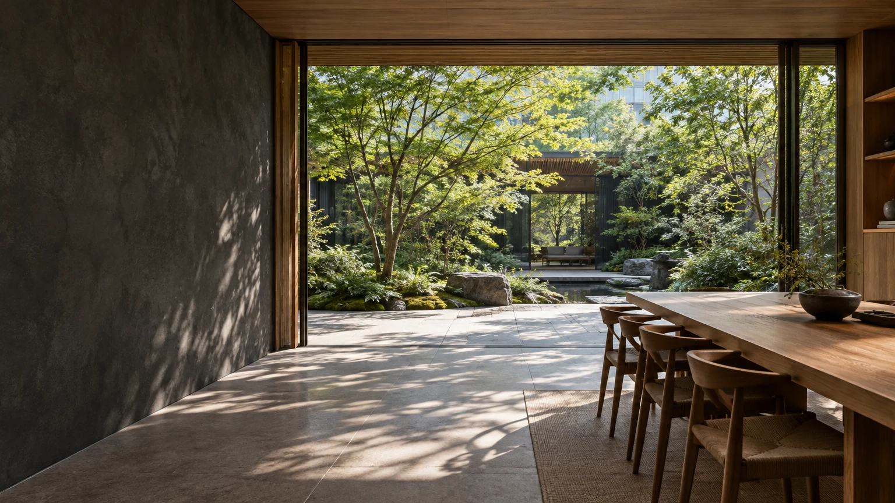

JAPAN COFFEE
国産コーヒーを扱うカフェを想定した自主制作サイトです。最初に写真でお店の雰囲気を伝え、豆・焙煎・抽出のこだわりを順に紹介。メニューではドリンクの写真・説明・価格を確認でき、最後にアクセスと営業時間を案内します。

お店の雰囲気と、来店前に必要なメニューや営業時間を1ページにまとめた例です。
公開サイトを見るカフェと建築設計事務所を想定して自主制作した、公開中の2サイトをご紹介します。写真と文章の並べ方、訪れた方に次の行動を案内する方法を作品ごとにまとめました。
国産コーヒーを扱うカフェを想定した自主制作サイトです。最初に写真でお店の雰囲気を伝え、豆・焙煎・抽出のこだわりを順に紹介。メニューではドリンクの写真・説明・価格を確認でき、最後にアクセスと営業時間を案内します。

お店の雰囲気と、来店前に必要なメニューや営業時間を1ページにまとめた例です。
公開サイトを見る商業施設・オフィス・ビルを扱う建築設計事務所を想定した自主制作サイトです。トップから施工事例、設計の考え方、事業領域、設計の流れ、問い合わせへ進める構成です。写真を大きく扱い、空間の印象と、相談するときに必要な情報を順に伝えます。

掲載している建築案件は架空のコンセプトです。末尾の問い合わせフォームは画面の見本です。
公開サイトを見る写真や文章がそろっていない段階でも、載せる内容から一緒に整理します。
サイト制作を相談する